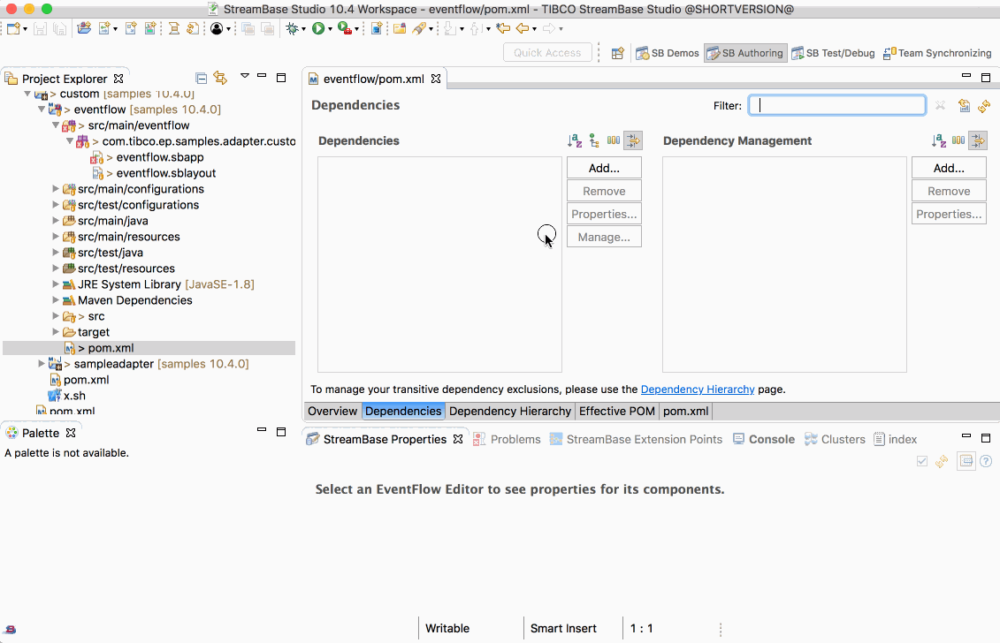
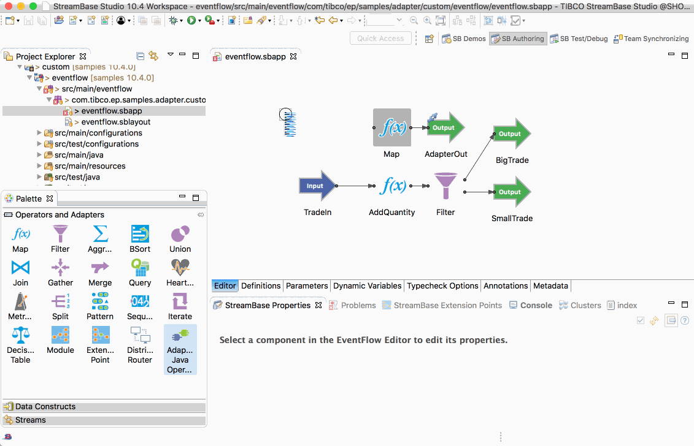
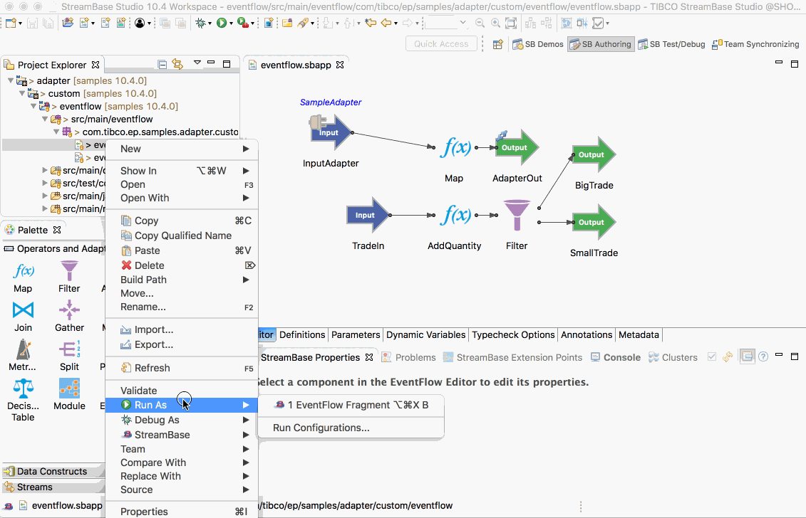
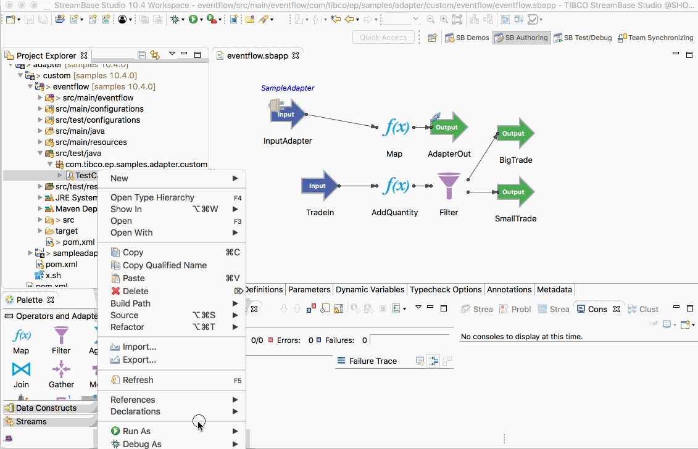
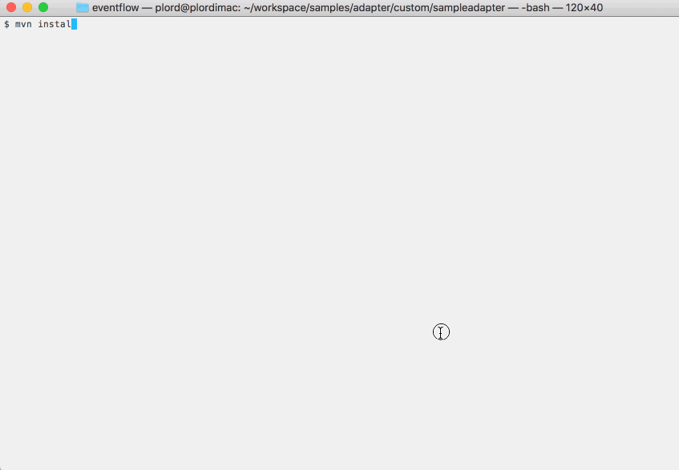

Adapter : EventFlow
This sample describes how to use a custom adapter in EventFlow.
- Import the adapter as a dependency
- Add adapter to EventFlow
- Running this sample from TIBCO StreamBase Studio™
- Building this sample from TIBCO StreamBase Studio™ and running the unit test cases
- Building this sample from the command line and running the unit test cases
Import the adapter as a dependency
This sample already contains the sample adapter as a dependency, but to use the adapter on a new project open the pom.xml file and use the Dependency tab to add the adapter :

Add adapter to EventFlow
To add a new sample adapter to the EventFlow, drag the java adapter icon to the EventFlow, set the adapter type and configure the schema :

Running this sample from TIBCO StreamBase Studio™
Use the Run As -> EventFlow Fragment menu option to run in TIBCO StreamBase Studio™, and then enqueue tuples :

Building this sample from TIBCO StreamBase Studio™ and running the unit test cases
Use the Run As -> EventFlow Fragment Unit Test menu option to build from TIBCO StreamBase Studio™ :

Building this sample from the command line and running the unit test cases
Use the maven as mvn install to build from the command line or Continuous Integration system :
